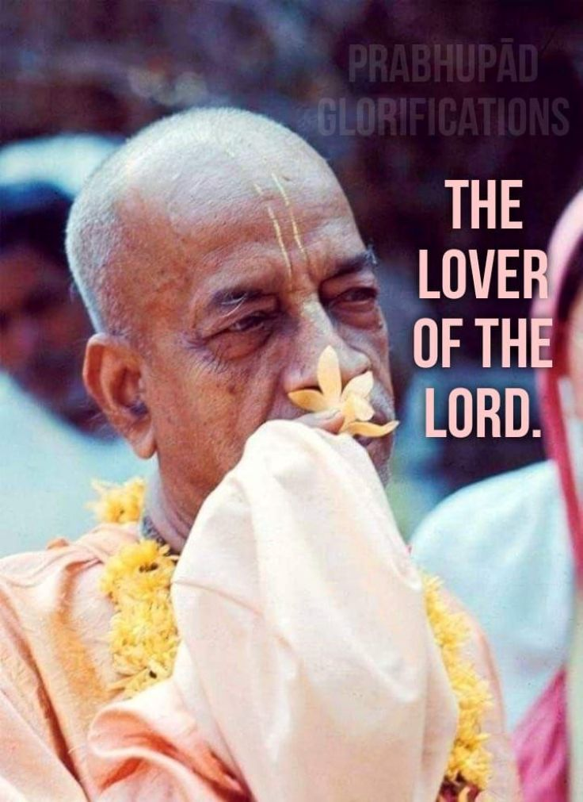

Prabhupād Knew it
Posted on : 27th October, 2024

Vishnu Gada Dasa : When Bhavananda was president of the New York temple, he initiated an all-night harinam sankirtan party on Broadway. After being out all night, the devotees came back, attended mangal arati and then rested. To facilitate their schedule, mangal arati was offered at 3:45 a.m. instead of the usual 4:30 a.m., and we had to wake up the Deities earlier also. Then when Prabhupada came, he greeted the Deities, looked at Them for some time, and then spoke with Bhavananda. We were wondering, "What's Prabhupada saying?" Later we found out that Prabhupada said "Krishna looks tired. All day He plays with the cowherd boys, He needs proper rest." Prabhupada had just arrived and I don't think anybody had told him about the all-night harinam sankirtan party, which was a little questionable anyway. After that, we moved mangal arati back to 4:30 a.m.
Ref- Memories-Anecdotes of modern day saint by siddhanta dasa